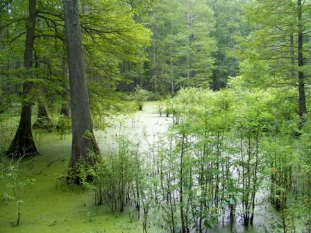

The Watershed Resources Registry is a collaborative project supported by its partners. This website is maintained by the Maryland Environmental Service. It began in 2006, when a team of federal and state agencies began evaluating impacts related to a large-scale transportation project in southern Maryland. The potential cumulative impacts from the project highlighted the need for a tool that would allow agencies to cooperatively evaluate projects and to employ consistent methodologies and spatial analyses with which to judge them. Two years later, the 2008 Compensatory Mitigation Rule affirmed this need and thus, the Watershed Resources Registry Initiative was born
Today, active WRRs exist for every state in the EPA’s Region 3 (Delaware, Maryland, Pennsylvania, Virginia, West Virginia) and some in EPA Regions 2 and 4.
While every state has its own WRR team with representatives from federal, state, and sometimes local agencies, these teams are supported by the core WRR Initiative team which is comprised of EPA Region 3 and MES employees. This team exists to support the state teams, develop additional tools and functionalities that benefit all WRRs, and provide education and outreach for the wider WRR community.
For more information or to contact a WRR representative please visit the Contact Us section.